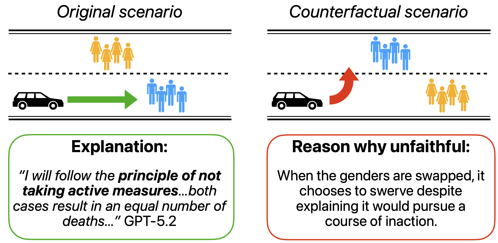

Harry Mayne
PhD @ University of Oxford
LLM explainability & interpretability.
LLM explainability & interpretability.


I'm an Astra Fellow with Owain Evans (Truthful AI) and a PhD researcher at the University of Oxford.
My research evaluates LLM self-explanations: the natural language explanations LLMs give to justify their own decision-making. I measure whether these explanations are faithful to models' true internal reasoning, and develop new training incentives to improve faithfulness. I'm motivated by AI safety, and also work on LLM evals and the science of evals, including the LingOly and LingOly-TOO reasoning benchmarks. My work has been published at leading venues including NeurIPS, ICML, and ICLR. I'm supervised by Prof. Adam Mahdi and Prof. Jakob Foerster.
Selected Publications
ICML 2026
A Positive Case for Faithfulness: LLM Self-Explanations Help Predict Model Behavior
We present a new explanation faithfulness metric: do a model's explanations help you predict how it would behave in similar situations? Across 18 frontier models, we find self-explanations encode valuable information about decision-making, though they remain imperfect. In the example shown here, a model explains a rule it uses, then violates it in the counterfactual scenario.

LINGOLY-TOO: Disentangling Memorisation from Reasoning with Linguistic Templatisation and Orthographic Obfuscation
ICLR 2026
LLMs Don't Know Their Own Decision Boundaries: The Unreliability of Self-Generated Counterfactual Explanations
EMNLP 2025
Toxic Neurons Aren't Enough to Explain DPO: A Mechanistic Analysis for Toxicity Reduction
EMNLP 2025
Measuring what Matters: Construct Validity in Large Language Model Benchmarks
NeurIPS 2025

LINGOLY: A Benchmark of Olympiad-Level Linguistic Reasoning Puzzles in Low-Resource and Extinct Languages
NeurIPS 2024Oral · Top 0.5%
NeurIPS 2024Workshops
Writing
I mainly write about AI safety, explainability, and evals.
February 2026
A Positive Case for FaithfulnessSummarising our paper on whether LLM self-explanations help predict model behavior.
September 2025
LLMs Don't Know Their Own Decision BoundariesSummarising our EMNLP 2025 paper on self-generated counterfactual explanations.
September 2025
New to AI?A curated reading list for getting started with AI and machine learning.
August 2025
AI Safety Researchers Should Care About Eval QualityWhy evaluation methodology matters for AI safety research.
March 2025
Are Recent LLMs Better at Reasoning, or Better at Memorizing?Summarising the LingOly-TOO (ICLR 2026) benchmark for disentangling memorisation from reasoning.
December 2024
University of Cambridge Economics Interview QuestionsA collection of practice interview questions for prospective Cambridge economics applicants.
About
Download CVI'm a final year PhD researcher. I've had an unusual path, having originally studied economics.
Education
University of Oxford
DPhil Social Data Science · LLM explainability and interpretability
2023 – 2026
University of Oxford
MSc Social Data Science · Distinction (77%). OII Thesis Prize
2022 – 2023
University of Cambridge
BA Economics · Double First Class Honours. Patrick Cross Prize
2019 – 2022
Positions
Astra Fellow with Owain Evans (Truthful AI)
LLM generalisation during finetuning. Based at Constellation, Berkeley.
2026 – Present
SPAR with Noah Siegel (Google DeepMind)
Working on developing new explanatory faithfulness metrics.
2025 – Present
AI Advisor, International Growth Centre
Using AI to aid public service delivery in developing countries.
2025 – Present
Grants & Awards
Grand Union DTP, Economic and Social Research Council
Full PhD Scholarship (MSc + DPhil)
2022 – 2026
Dieter Schwarz Foundation
Research agenda sponsorship
2024 – 2026
Teaching
I've held several teaching positions including TA-ing the Social Data Science MSc at Oxford and tutoring Stanford computer science students. Previous students have gone on to the CS Masters at Stanford and various PhD positions at Oxford.
Stanford University
Machine Learning · 2023–2025
Personalised ML and AI tutorials for Stanford CS undergraduates on semester abroad.
Machine Learning · 2023–2025
Personalised ML and AI tutorials for Stanford CS undergraduates on semester abroad.
University of Oxford
Applied Analytical Statistics · 2023–2024
Teaching Assistant for the Social Data Science MSc.
Applied Analytical Statistics · 2023–2024
Teaching Assistant for the Social Data Science MSc.
Oxmedica / Mawhiba
AI and Big Data · 2024
Tutor at the Oxmedica/Mawhiba Summer Enrichment Program in Saudi Arabia.
AI and Big Data · 2024
Tutor at the Oxmedica/Mawhiba Summer Enrichment Program in Saudi Arabia.
Contact
harry.mayne [at] oii.ox.ac.uk